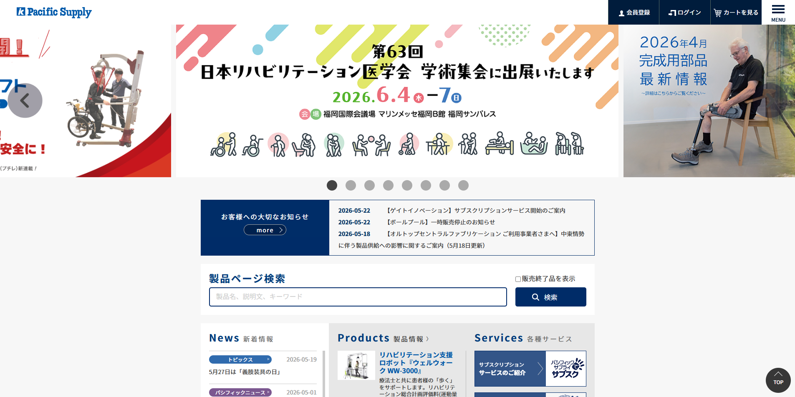
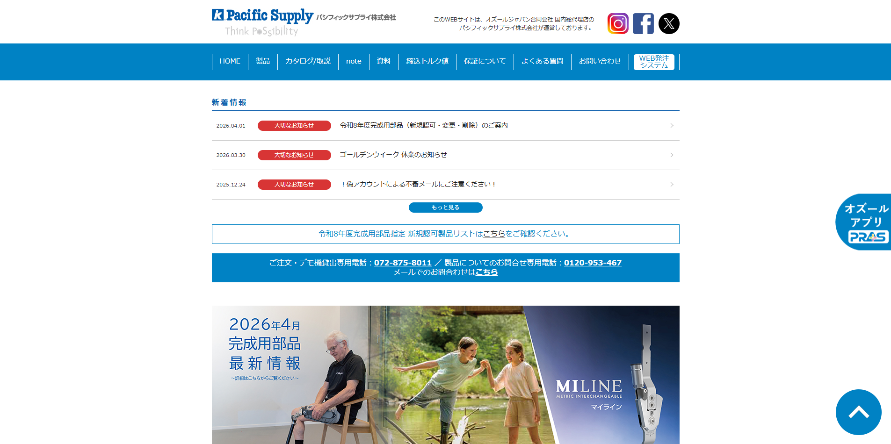
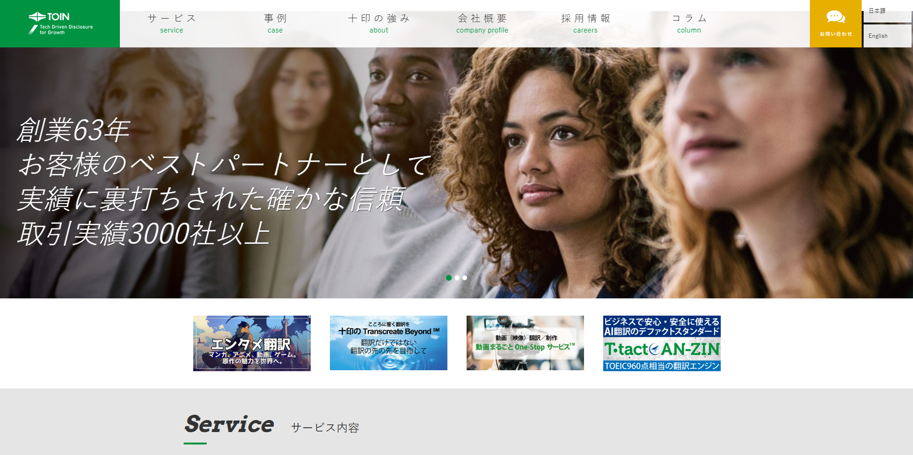
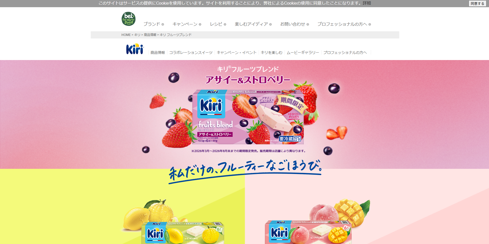
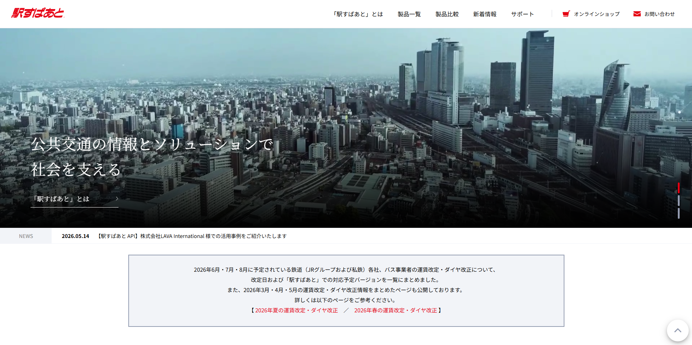
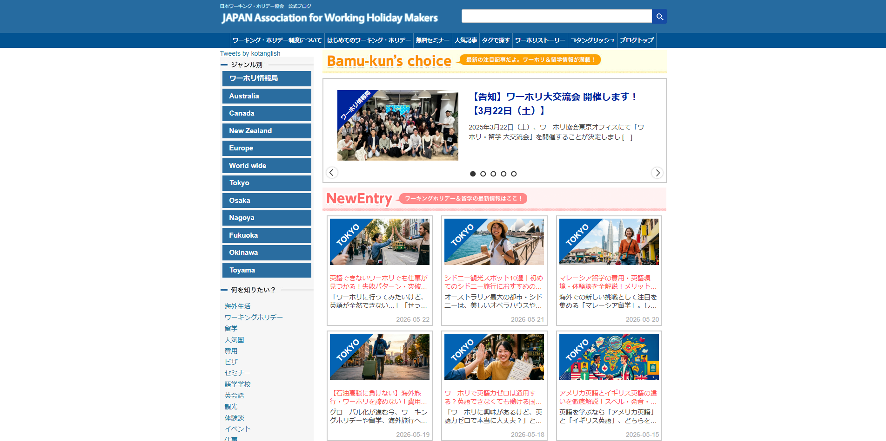
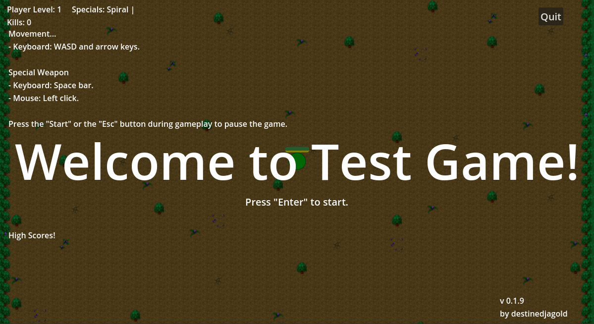

Hello, I'm Joseph.
Web & Software Developer
Welcome to my portfolio! I am a developer specializing in core backend systems, legacy platform migrations, and custom database-driven applications. Explore my professional work history and personal creative projects below.
Professional Work

Custom MVC Application Maintenance
Providing long-term backend maintenance and system stability for a high-traffic platform since late 2018. Tasked with managing a complex legacy environment that integrates Composer for dependency management alongside a custom, proprietary Model-View-Controller (MVC) framework. Proven track record of navigating, troubleshooting, and keeping undocumented codebases running smoothly over several years.
Link
Wordpress Custom Admin Feature Engineering
Developed a custom 'What's New' (新着情報) feature from scratch for the site's main landing page. Engineered a dedicated WordPress administration interface tailored to the client's content management workflow, allowing for seamless updates. Collaboratively maintain the platform with a development team, ensuring consistent uptime and routine content updates.
Link
Legacy WordPress Core & Infrastructure Migration
Led the technical migration and modern upgrading of a legacy WordPress platform. Collaborated with a development team to conduct full-site quality assurance audits, update outdated theme architectures, and resolve critical bugs—including fixing broken Custom Post Type (CPT) archive filtering layouts caused by core version shifts.
Link
Technical Oversight & Peer Code Review
Tasked with technical oversight for this project, serving as the code reviewer for developers handling the platform's updates. My role focused on analyzing code changes, troubleshooting integration risks, and validating backend logic to ensure a seamless, error-free deployment.
Link
High-Fidelity Frontend & JavaScript Replication
Heavily focused on high-fidelity frontend replication and custom JavaScript engineering during a legacy-to-WordPress platform migration. Tasked with ensuring critical client-side features and interactive behaviors remained completely identical across architectures. Overcame native CMS constraints by architecting custom, decoupled JavaScript solutions to successfully preserve advanced user-experience elements that standard WordPress templates could not natively support.
Link
Accelerated Legacy Platform Integration
My foundational WordPress project, focused on rapid feature deployment and legacy system migration under a strict launch timeline. Handled the frontend implementation of dynamic content overlays ('text icons') on media elements by adapting legacy components to a modernized server environment. This project served as a core milestone in developing efficient, high-pressure troubleshooting workflows and adaptive coding practices.
LinkIndie Projects & Creative Hobbies
Digital Art
A childhood dream of one day being able to draw good art, finally achieved... digitally. I am using a Huion drawing tablet that I borrowed from my youngest brother. I don't draw much these days though...
Link
Game Making in Godot
Another childhood dream of one day being able to create my own video games. I used Godot and spent most of 2025 trying to learn it, with the help of Gemini AI if ever I get stuck in either code or in Godot's UI and functions. I was surprised to learn that its code structure is similar to Python. Unfortunately I got a little too busy with real life to continue messing around with Godot. The link below will lead you to the itch.io page of my 'vampire survivor' game, the result of my first attempt at Godot.
Link